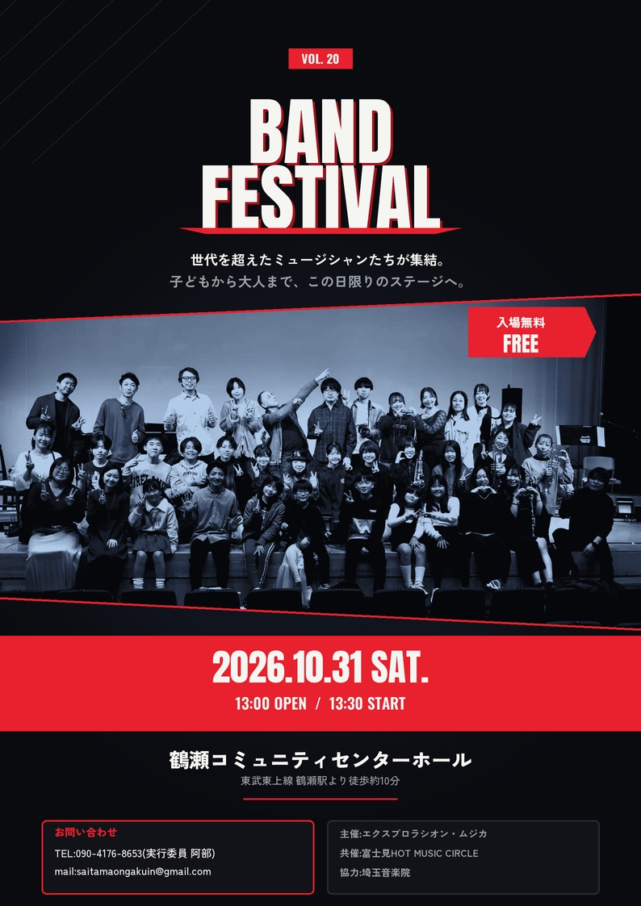

🎵
埼玉音楽院
SAITAMA ONGAKUIN
ホーム
教室について
料金・コース
演奏会・イベント
制作・演奏依頼
アクセス
お問い合わせ
Event
演奏会・イベント
生徒の皆さんによる発表会や、地域と音楽でつながるイベントをご紹介します。
開催予定
近日開催のイベント
2026
10.31
BAND FESTIVAL VOL.20
世代を超えたミュージシャンたちが集結。子どもから大人まで、この日限りのステージへ。
📍 会場：
鶴瀬コミュニティセンターホール
（東武東上線 鶴瀬駅より徒歩約10分）
🕐 13:00 OPEN / 13:30 START
🎫 入場無料
主催：エクスプロラシオン・ムジカ 共催：富士見HOT MUSIC CIRCLE 協力：埼玉音楽院
お問い合わせ：TEL 090-4176-8653（実行委員 阿部）／
saitamaongakuin@gmail.com

2027
1.17
楽院祭 開催
日頃のレッスンの成果を発表する、生徒の皆さんとご家族にとって大切な発表の場です。詳細は決まり次第お知らせいたします。
開催実績
過去のイベント
2025
11.9
第52回目 楽院祭 開催
📍 会場：
キラリ☆ふじみ マルチホール
第52回目となる楽院祭が、キラリ☆ふじみマルチホールにて開催されました。日頃のレッスンの成果を発表する、生徒の皆さんとご家族にとって大切な発表の場です。
一緒に音楽を楽しみませんか？
発表会やイベントは、仲間と音楽を分かち合う絶好の機会です。まずは無料見学から。
お問い合わせはこちら